Working with a pretrained flow model
Image restoration, guided editing and two ways to combine velocity fields.
PixNerd predicts a velocity at the current image and time. The clean endpoint has t = 1 and Gaussian noise has t = 0. Each training pair defines a straight path, but the direction predicted during sampling can change after every update.
The inputs are center-cropped and resized to 512 × 512, then mapped to RGB values in [−1, 1]. Computation and integration use float32. Images are clipped only for display. The prompt embeddings are cached, and no model training is performed in this part.
Constructing noisy inputs
I use the building photograph throughout the restoration experiments. One Gaussian noise tensor, generated with seed 180, is shared by all three starting times. This keeps the underlying noise realization fixed as the amount of image information changes.
At t = 0.25, the roofline is still visible, but the window details are largely lost in the noise. At t = 0.50, the building and trees become easier to distinguish. At t = 0.75, the photograph is clearly recognizable, although fine grain remains. The noise pattern is fixed across all three images, so this comparison changes only the interpolation weight.
A Gaussian baseline
The interpolation scales the original image by t. Before applying a classical Gaussian filter, I divide by t to restore its amplitude. This also amplifies the remaining noise. I compare Gaussian standard deviations of 1, 2, 4, 8 and 16 pixels and choose the lowest un-clipped MSE against the known original at each time.
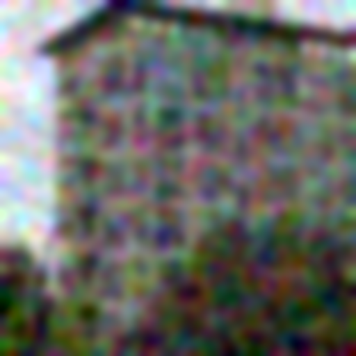

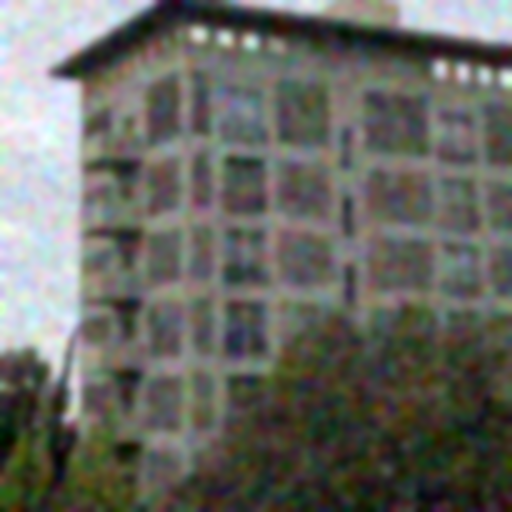
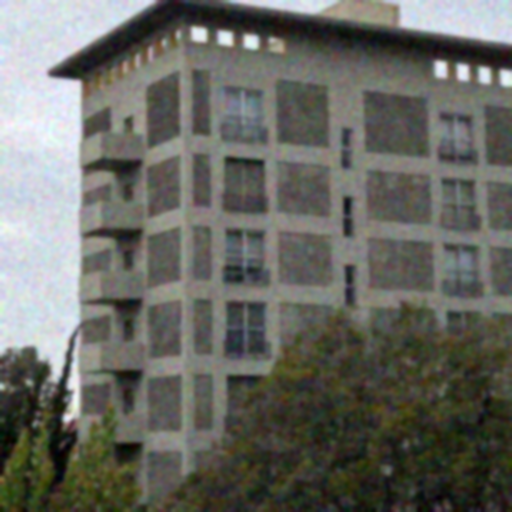
| Time | Selected sigma (pixels) | MSE to original |
|---|---|---|
| 0.25 | 8 | 0.04735 |
| 0.50 | 4 | 0.0242 |
| 0.75 | 2 | 0.01243 |
Among the five tested widths, sigma = 8, 4 and 2 give the lowest reconstruction MSE at t = 0.25, 0.50 and 0.75, respectively. Stronger smoothing is needed when the input contains less of the original image. At t = 0.25, the large kernel suppresses the grain but leaves broad colour patches and soft window edges. At t = 0.75, a smaller kernel retains much more of the facade, although the trees lose fine detail.
One prediction to the endpoint
For one-step denoising, I predict a velocity once and extrapolate to t = 1. The network predicts a direction of travel, so the update adds the remaining time multiplied by velocity. The condition is the exact prompt a high quality photo
.
A single model prediction removes far more visible noise than Gaussian smoothing while retaining the building's main structure. At t = 0.25, it recovers the facade and window layout, but the wall panels become smooth and the tree becomes a soft mass. At t = 0.50, window frames and shutters are clearer. At t = 0.75, more foliage and wall texture survive, although the result still loses some fine detail from the original.
Raw reconstruction MSE decreases from 0.016602 to 0.006421 to 0.002658 as the starting time increases. Each value is lower than the selected Gaussian baseline at the same time. The clean-looking output at t = 0.25 should not be read as exact recovery: the model replaces details that the noisy input no longer specifies reliably.
What the model adds
Because the original and sampled noise are known, I can compare the predicted image update with the update that exactly reaches the original. The heatmap measures the root-mean-square difference across the three RGB channels at each pixel.
All update images use one symmetric RGB range, [−3.952, 3.952], with zero at middle gray. All error heatmaps share the same linear range, 0 to 1.491. Errors are computed before display conversion.
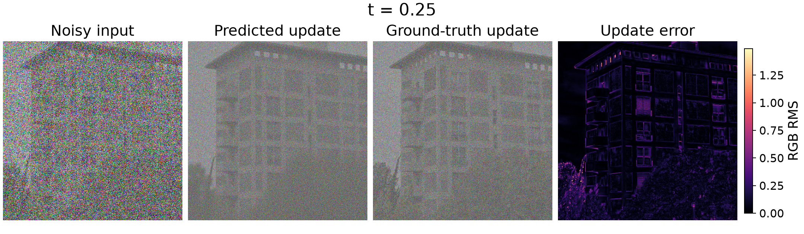
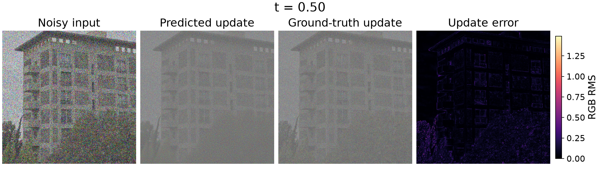
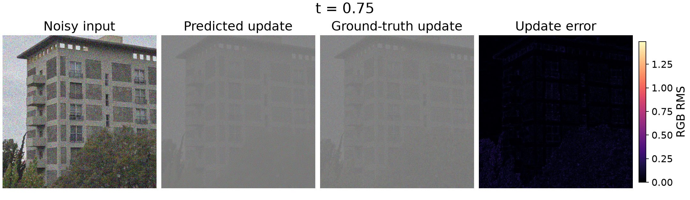
The predicted and ground-truth update images look similar because both largely cancel the same noise. The shared-scale error maps reveal where they disagree: roof openings, window frames, shutters and foliage stand out more than the broad sky and wall regions. The strongest errors occur at t = 0.25, where the one-step result also loses the most detail.
Mean per-pixel RGB RMS update error is 0.087769, 0.054740 and 0.036182 at t = 0.25, 0.50 and 0.75. These are errors in the remaining update, not in the unscaled velocity. The factor 1 - t becomes smaller as time increases, so it contributes to the decrease. All maps use the same linear range, allowing their brightness to be compared directly.
Following the velocity field
Euler sampling makes a small update, then evaluates the model again at the new image and time. Starting from the saved t = 0.50 image, 25 updates of h = 0.02 reach t = 1. The implementation shortens the last step when a starting time does not divide evenly into this schedule.
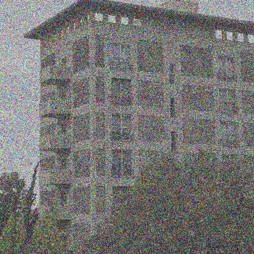
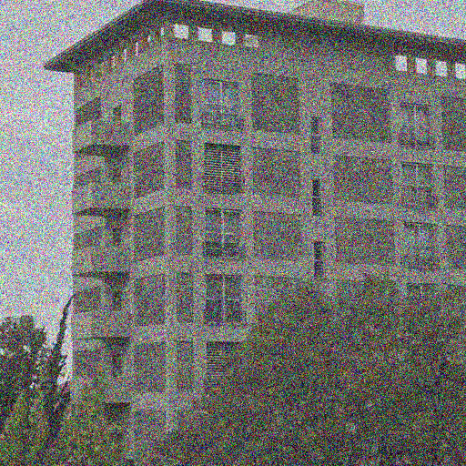
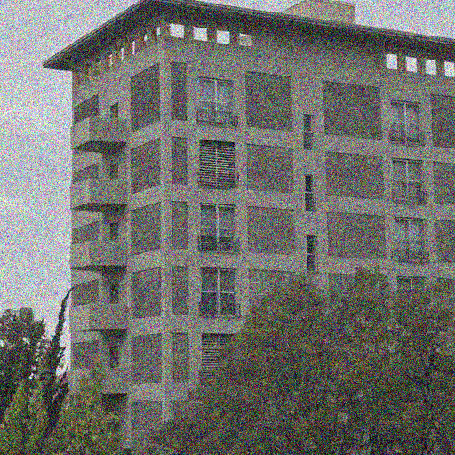
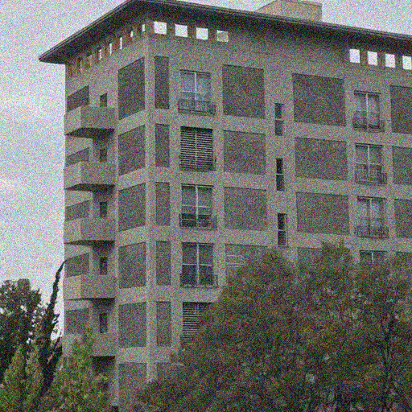
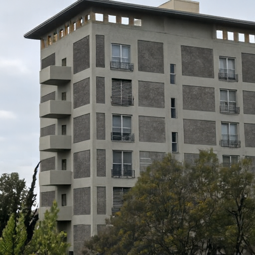
Comparison from the same noisy input


| Method | Un-clipped MSE to original |
|---|---|
| Gaussian | 0.0242 |
| One step | 0.006421 |
| Euler | 0.008366 |
Across the 25 Euler updates from t = 0.50 to 1, the grain gradually recedes while the building stays in place. By t = 0.90, the roof and windows are clear; the final steps reveal more texture in the wall panels and more distinct branches. Compared with the one-step estimate, the final Euler image is sharper in those areas, while Gaussian smoothing leaves coloured mottling and soft edges.
Sharper detail does not give the lowest pixel error in this example. At the same starting time, MSE is 0.024198 for Gaussian smoothing, 0.006421 for one-step denoising and 0.008366 for Euler sampling. The Euler result adds plausible fine structure that does not exactly reproduce the original photograph, while the smoother one-step result stays closer under squared error.
Generating from noise
Starting at t = 0 removes the original image entirely. Each example below begins with independent Gaussian noise and uses 50 Euler updates, h = 0.02, with a high quality photo
. These are ordinary conditional samples, without classifier-free guidance.

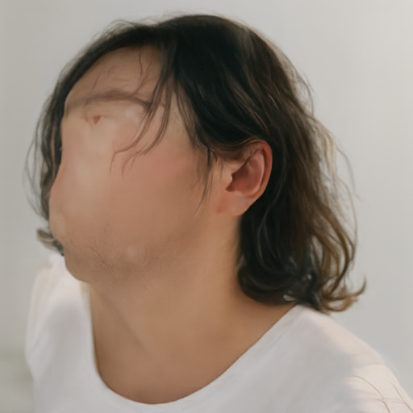

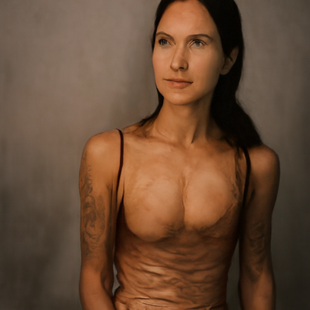

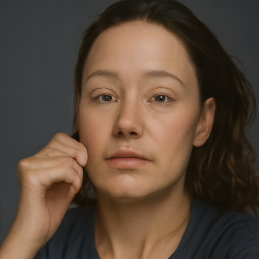

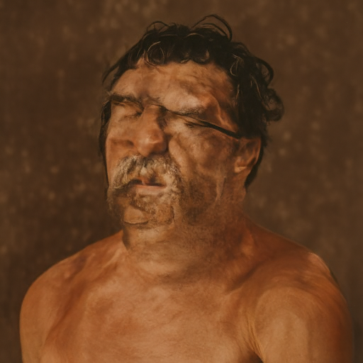

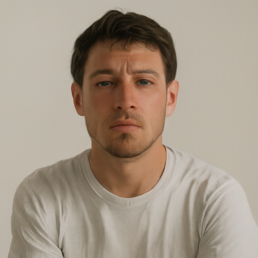
The five noise seeds produce different portraits under the same broad prompt. Seeds 182 and 184 give the clearest faces. Seed 180 has missing facial structure, seed 183 has distorted features and irregular skin texture, and seed 181 has an awkward transition between clothing and the torso. Ordinary conditional sampling can therefore produce recognizable subjects without producing a convincing photograph every time.
All five samples are portraits even though the prompt only asks for a high quality photo. The results vary in pose, hair, clothing and background, but this small set shows limited variety in subject matter. Each image starts from independent Gaussian noise and uses the same 50-step Euler sampler.
Classifier-free guidance
I evaluate the same state twice: once with the photo prompt and once with the empty prompt. Part A defines guidance around the conditional prediction. With w = 7, the difference from the unconditional field is added seven more times.
Each row uses the same initial noise for its two results. Step size remains 0.02. Setting w = 0 recovers ordinary conditional sampling.


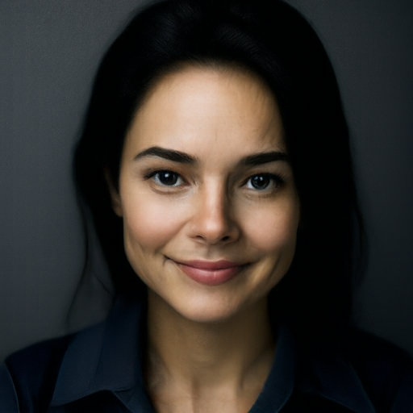

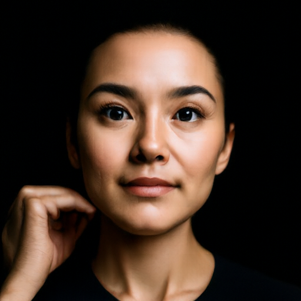


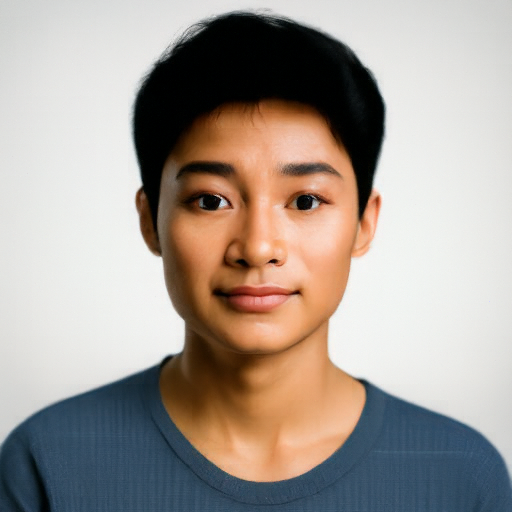
With guidance weight 7, all five matched results have more coherent facial structure and cleaner backgrounds. The difference is especially clear for seeds 180 and 183, whose unguided conditional samples have substantial facial distortions. Seeds 181 and 182 also gain stronger contrast and more distinct facial details. The guided results still have smooth, polished skin, so sharper features do not remove every sign of synthesis.
Each pair uses exactly the same initial noise. Guidance changes the velocity field throughout sampling, so it can also change appearance, pose and framing. This set demonstrates improved visual coherence, while its subject variety remains limited to portraits.
Editing existing photographs
To edit an image, I interpolate it with Gaussian noise at the chosen starting time and integrate forward to t = 1. Every sweep uses starting times 0.02, 0.04, 0.06, 0.10, 0.14, 0.25 and 0.50, h = 0.02 and w = 7. The same noise realization is reused within the sweep. Higher starting times preserve a larger contribution from the source.
Campanile
Prompt: a high quality photo

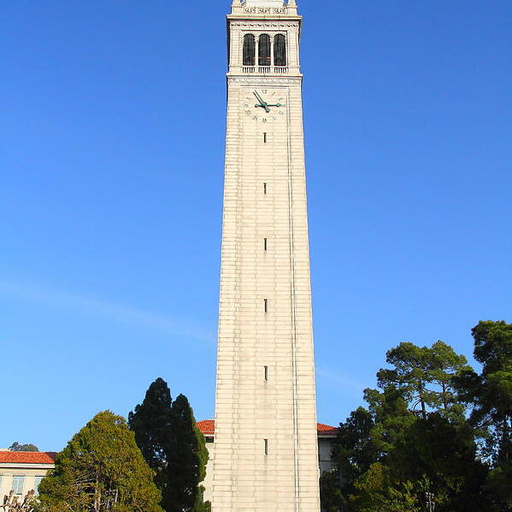


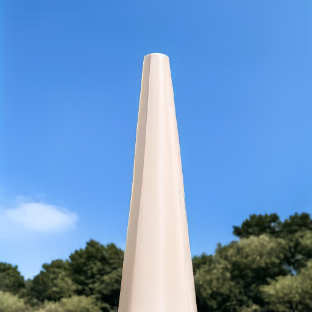

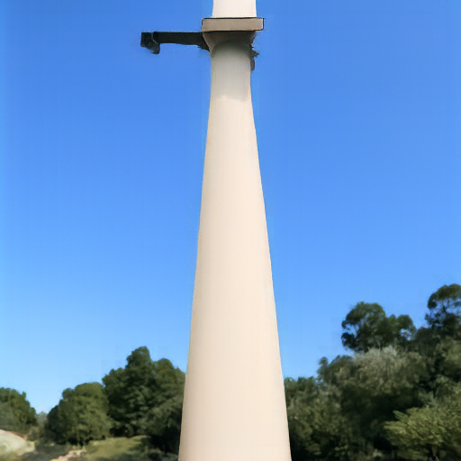

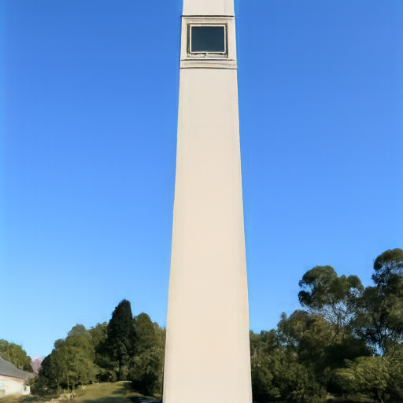

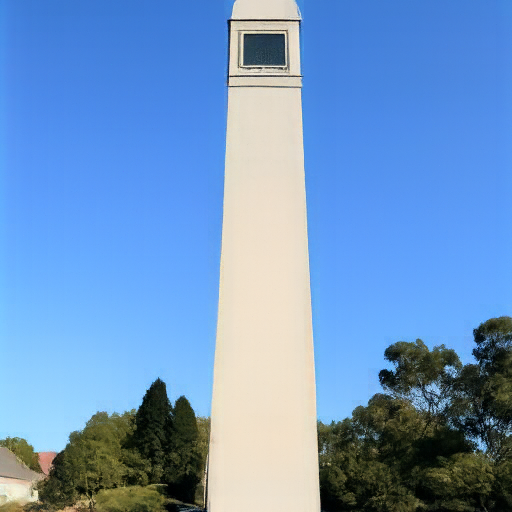


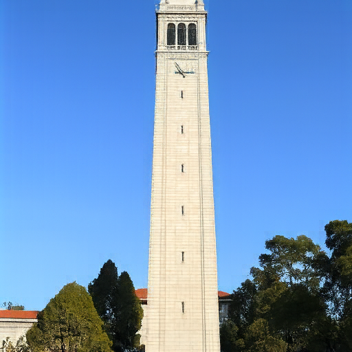
Building photograph
Prompt: a high quality photo

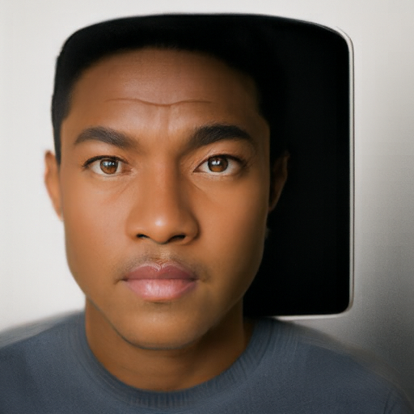

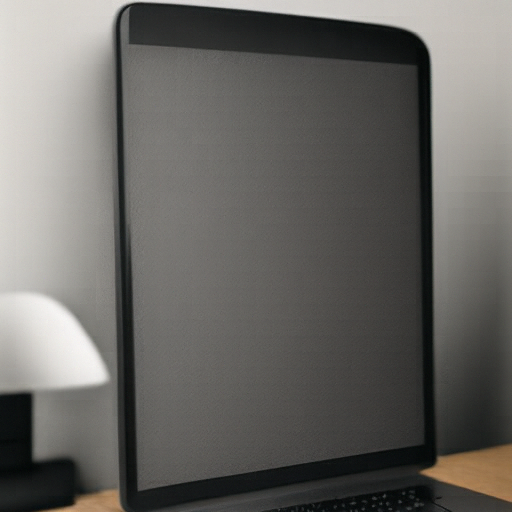

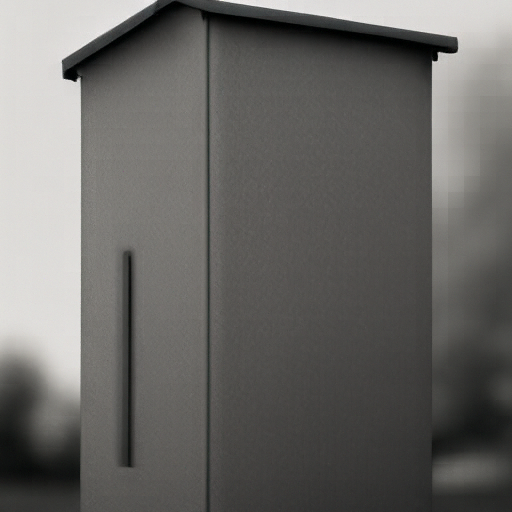

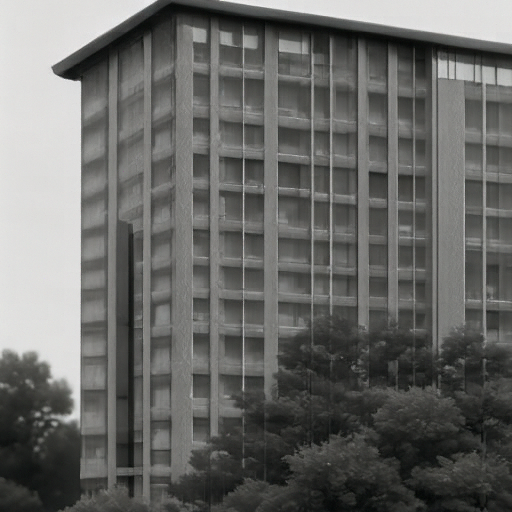

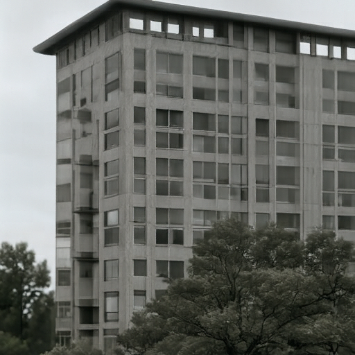

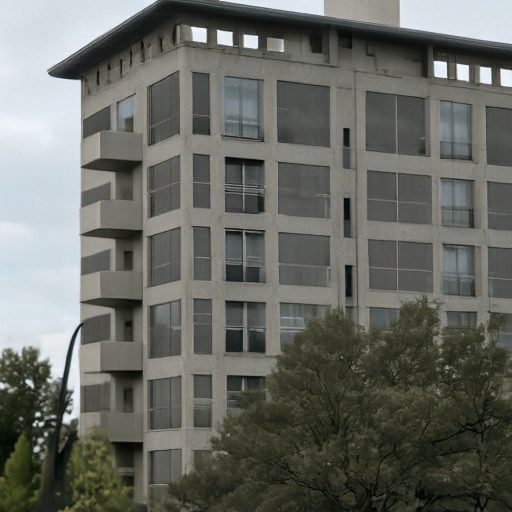

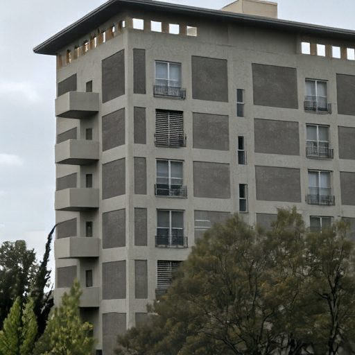
Dog photograph
Prompt: a high quality photo

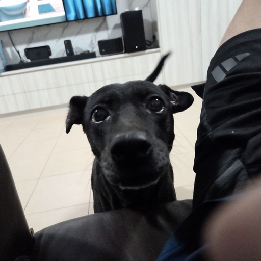


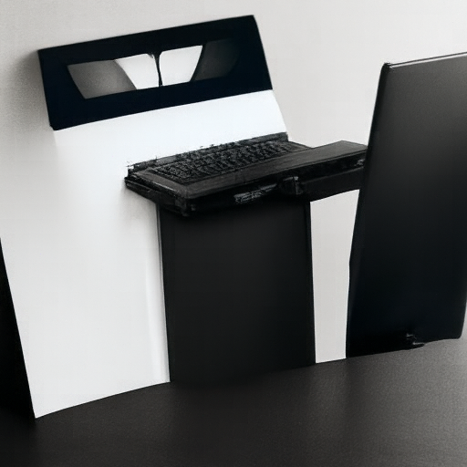


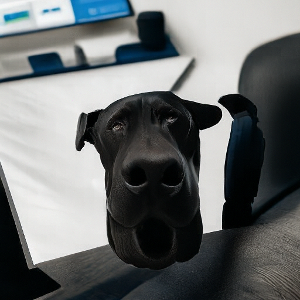

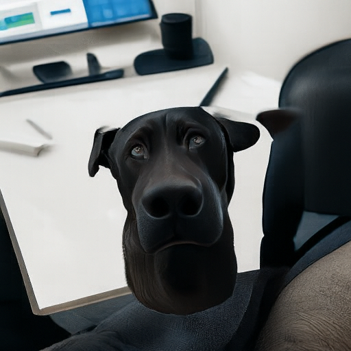


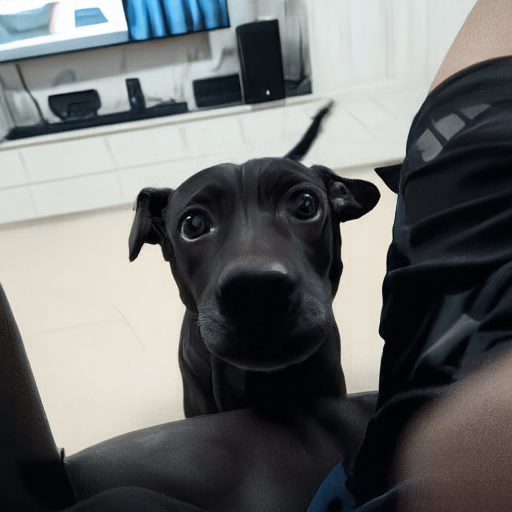
At t = 0.02, the Campanile becomes a smooth pale column against a blurred blue background. At t = 0.04 and 0.06, the sky and trees return, but the shaft is still almost featureless. The results at t = 0.10 and 0.14 have a dark square near the top instead of the clock and belfry. The arches return at t = 0.25, while the clock face and masonry become recognizable at t = 0.50.
The building changes subject completely at low starting times: t = 0.02 gives a portrait, t = 0.04 gives a monitor, and t = 0.06 gives a plain box-shaped structure. At t = 0.10 and 0.14, the model recovers an apartment-like building but adds a denser, more regular window grid. At t = 0.25, the roof, corner balconies, and foreground trees resemble the source. The result at t = 0.50 retains the original facade most closely, although fine wall and foliage details still change.
The dog disappears at t = 0.02 and 0.04, where the sampler creates computer-like equipment. At t = 0.06, the central dark shape becomes a black cylindrical object. A dog returns at t = 0.10 and 0.14, but its muzzle and neck are stretched. At t = 0.25, the face and body are more coherent, while the room is still rearranged. At t = 0.50, the eyes, head position, and surrounding furniture are much closer to the original photograph.
From simple inputs to model edits
The same procedure can begin with a web image or an illustration. These experiments retain the generic photo prompt and the complete seven-time schedule.
A photograph from the web
Prompt: a high quality photo

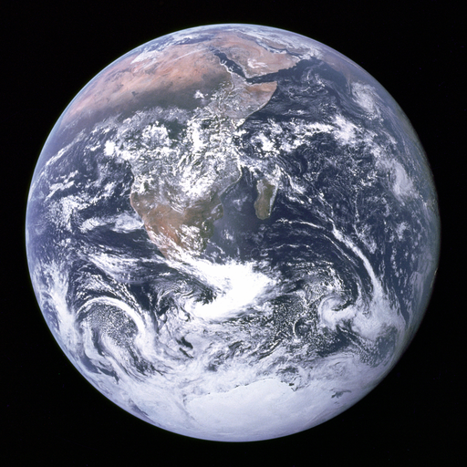

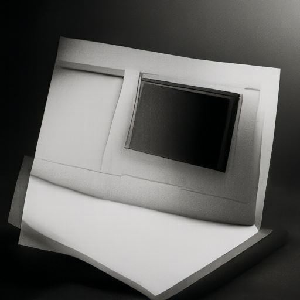

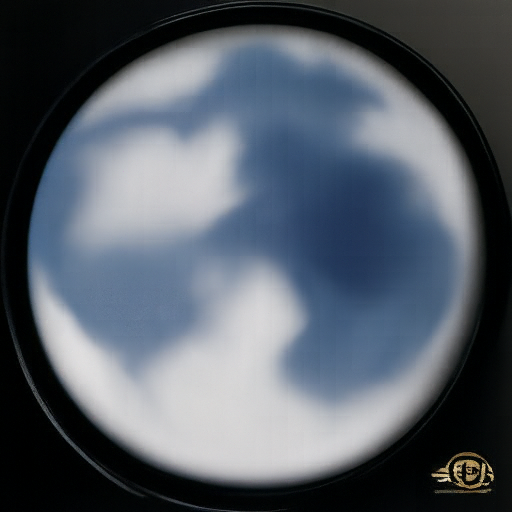

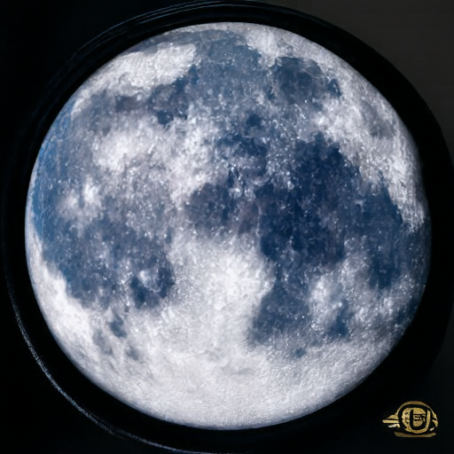

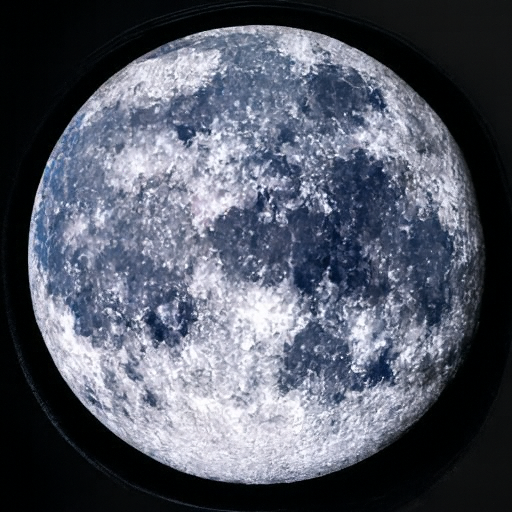

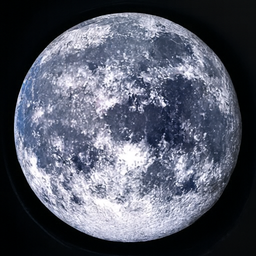

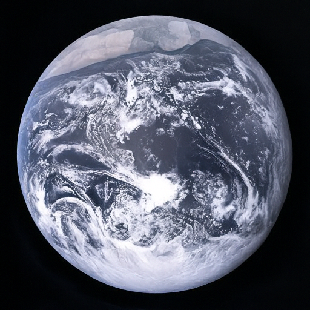

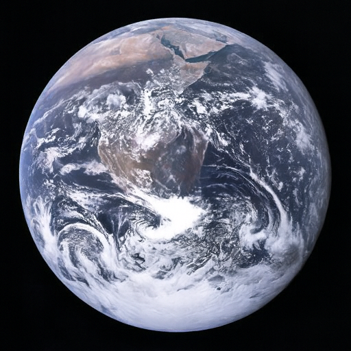
Source: NASA / Apollo 17 crew, The Blue Marble, public domain. The downloaded photograph is center-cropped and resized for the model.

The downloaded Earth image becomes an unrelated white rectangular object at t = 0.02. At t = 0.04, only a blurred circular form and the blue-white palette remain. The results at t = 0.06, 0.10, and 0.14 have a mottled, moon-like surface instead of recognizable continents and clouds. Some low-time results also add a dark circular frame and a small gold emblem that are absent from the source. Earth-like landmasses and cloud bands return at t = 0.25, and t = 0.50 most closely preserves the original globe.
Two drawings on paper
For the drawing experiments, I use photographs of a house and a flower drawn on paper. Each photograph is center-cropped and resized to 512 × 512, using the same preprocessing as the other inputs.
Original photographs: house and flower.


House drawn on paper
Prompt: a high quality photo


Flower drawn on paper
Prompt: a high quality photo


The photographed house drawing becomes a portrait at t = 0.02. At t = 0.04, 0.06, and 0.10, the pen lines disappear into nearly blank grey fields; t = 0.14 retains only blurred paper-like texture. The house returns at t = 0.25, but the roof, chimney, and window lines are rearranged. At t = 0.50, the chimney, tiled roof, windows, and door closely follow the source. The result remains a drawing on paper rather than becoming a photographic house.
The photographed flower drawing becomes a blurred oval form at t = 0.02. From t = 0.04 through 0.14, the flower is lost and only smooth background shading remains. At t = 0.25, the stem and pot return, but the petals are fragmented and extra lines cross the top of the flower. At t = 0.50, the petal outline, leaves, and pot are mostly retained. These sparse pen outlines do not become convincing natural objects in this run: low starting times lose the subject, while the highest tested time preserves the paper drawing.
Text-guided changes
Here I replace the generic condition with a prompt describing a specific change. Image preprocessing, initial noise, guidance and time steps stay the same, so each sweep shows how the source image and requested subject compete.
Campanile to a rocket
Prompt: a photograph of a rocket standing on a launch pad


Building to a castle
Prompt: a photograph of a stone castle covered in ivy


Dog to a fox
Prompt: a photograph of a red fox looking at the camera


For the rocket prompt, t = 0.02 and 0.04 produce recognizable rockets with launch structures, replacing the campus surroundings. At t = 0.06 and 0.10, a close view of a smooth rocket body keeps the source's tall central shape. At t = 0.14, tower-like openings and rocket-like bands coexist above an industrial background. The Campanile returns at t = 0.25, and t = 0.50 largely preserves the tower, clock, and trees, with little of the requested rocket edit remaining.
For the ivy-covered castle prompt, t = 0.02 and 0.04 replace the apartment building with stone towers, battlements, and dense ivy. At t = 0.06 and 0.10, the rectangular building mass and broad roof return while stone walls, arched windows, and ivy remain. At t = 0.14 and 0.25, more of the original facade arrangement survives beneath the altered materials. The result at t = 0.50 is closest to the apartment photograph, so the requested castle transformation is much weaker.
For the red-fox prompt, t = 0.02 generates a full fox outdoors, replacing both the dog and the room. At t = 0.04 and 0.06, the fox remains recognizable, but the background becomes a printed display rather than the original interior. At t = 0.10, the room begins to return around a fox-shaped face. At t = 0.14 and 0.25, the outputs combine reddish fur with increasingly dog-like features and altered proportions. At t = 0.50, the original dog's face and room are mostly retained, with only a limited fox-like change in colour and fur.
Visual anagrams
Each sampling step combines two guided predictions. One interprets the image upright; the other interprets a 180-degree rotation. I rotate the second velocity back before averaging. Both spatial axes are reversed, while the RGB channels remain unchanged.
Illusion 1


Illusion 2


The first image reads clearly as an older man upright and as people gathered around a campfire after a 180-degree rotation. The bright forehead becomes the fire, while the surrounding facial shading becomes clothing and figures. Small faces are still visible around the upright portrait's chin and neck, but both intended subjects are recognizable.
The second pair also supports both readings. Upright, the sharp snowy peaks, roofs and central steeple suggest a mountain village. After rotation, the horse's ears, eye, muzzle and mane are clear. This pair is less convincing as a village because the inverted horse face remains conspicuous in the foreground.
Hybrid images
Instead of averaging two whole fields, I combine their spatial frequencies. The first prompt contributes low frequencies; the second contributes detail. A separable Gaussian uses a 265-pixel kernel and sigma 16 at 512 × 512. The composite velocity is recomputed at every Euler step.
Hybrid 1
Low frequencies: a lithograph of a skull
High frequencies: a lithograph of a waterfall
Seed: 182


Hybrid 2
Low frequencies: an oil painting of an old man
High frequencies: an oil painting of people around a campfire
Seed: 181


In the skull and waterfall result, the full image resolves into several cascades separated by dark rock. At 64 pixels, the broad dark shapes form two eye sockets and a nose cavity, while the pale lower bands suggest the jaw and teeth. The skull outline remains noticeable at full size, but the change in the dominant subject is clear.
The second hybrid shows people gathered around a campfire at full size. In the small view, the lit background becomes the forehead and hair of an older man, the dark figures form the eye areas, and the fire becomes part of the beard. This switch is less distinct than the skull example because the fire is still visible in the thumbnail.